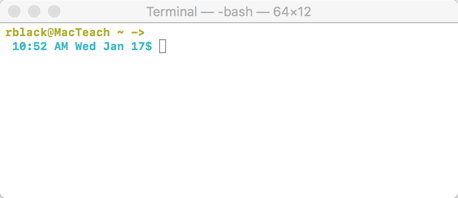

The Command Line¶
You are in for a shock!
We will work using a classical interface to the operating system called the command line. All systems support this kind of interface, and using this mechanism to control your machine is sometimes needed. When you work on a remote server, out there in the cloud, there is no graphical user interface available. You have to use the command line!
Note
Students in this class show up owning a Windows PC, or maybe a Mac. Rarely, they have one running some flavor of Linux. I try to accommodate all three kinds of users, so these notes will cover all of these systems.
Here is the command line on my Mac:
Pretty dull, right? No fancy icons, not much color. The key thing here, is that everything is text-based. The software needed to create this interface is extremely simple. For that reason alone, this is the interface of choice for doing simple text-based tasks on any computer.
Finding the Command Line¶
Let’s launch this new interface:
Windows Command Line¶
Windows likes to call their interface the “command prompt”. You can bring up this interface by doing this:
- Click on the “Search” area at the bottom left of your screen
- Enter “cmd” (without the quotes). The command prompt window should appear,
Note
You probably will want to “pin” this window’s icon on the task bar at the bottom of your screen. Right-click on that icon and select “Pin to Taskbar”. Then, to launch a command line window, just click on that icon.
Mac Command Line¶
On the Mac, you will open the Terminal application. Using the Finder
tool, navigate to .
Click on that to start the application.
Note
Follow the guide above to “pin” this icon to the Mac Dock.
Linux Command Line¶
Note
I will be using some flavor of Ubuntu Linux in this course. If you are running some other Linux distribution, consult your user guides (or cheat and Google for help).
Assuming you are running the desktop version of Ubuntu, you can open a shell interface (that is Linux-speak for command prompt) by doing this:
- Click on the “gear” icon (the Ubuntu applications search tool) and type in “Term” in the search box. I usually select
Xtermon my systems, but there is another simplerTerminalapplication as well.
Entering Commands¶
In all three cases above, you end up staring at a blank window with some kind of prompt displayed. Typically, the prompt is a simple line like these :
Windows:
**C:\>**
Mac/Linux:
**/Users/rblack $**
Your cursor is placed after the prompt characters, and the system waits fr you t type something on that line. What you type is a command to the operating system, usually the name of some program you want to run. If needed, you add additional chunks of text, called aparameters that provide additional information to the program. An example command might look like this:
$ g++ -o hello.exe hello.cpp
Note
I am going t use the Mac/Linux prompt format, shortened to just the single prompt character for the example in this course. You should look for the right prompt for your system. The example above is what you would type on a Windows system.
This example command names a program, g++, which is a compiler for a C++ program. Each chunk of text after that is a parameter that the program needs. We will explore this in more detail later. For now, that is enough to introduce working on the command line.
The File System¶
All modern computers keep their files organized in a “tree” of directories, subdirectories, and files.
Note
It is called a “tree” because it looks like one if you drew it out. However, the “root” of this tree is usually at the top of the tree. Weird, but the image works.
The basic concept is found in any office setting. A piece of paper (a “file”) is placed in a “folder”. That folder might be placed in another folder, and ultimately in a filing cabinet. We give each gadget in this system a short name. On Windows, the filing cabinet gets a letter, like “C”. We define the location of some file using the series of names separated by slashes. On Windows, we use a back-slash, on Linux/Mac, we use a forward slash.
The complete set of names defining the location of some file is called the file “path”:
- C:folder1folder2filename
The top level in this system is often called the “root” folder -er- directory.
Linux/Mac systems do not use a disk drive letter. Instead a disk is “mounted” at some location in this file system “tree”, so we never have to think about that. On these systems the top-most level is simple identified as “/”.
The “Current Directory”¶
When you work on the command line, you are always working within some “directory” on your file system. That directory is called the “current directory”
Essentially, you are working with that folder open on your desk. You can see the files in that folder, and the folders within that folder. To get into a subfolder (or move up in the file system, you must “change directories”.
- cd subfolder - moves your current directory to this subfolder
- cd .. - moves you up one level in the directory “tree”
On Mac and Linux, when you open up the terminal window, you are placed in your “home directory”:
- /home/username - on Linux
- /Users/username - on Mac
On the PC, you are placed in a system directory, which is not where you will want to work.
- C:\Windows
There is a “home directory” on Windows, usually at:
- C:\users\username
Warning
Did you notice those slashes in those directory names? On Windows, you use the back slash, on any other system the forward slash. The slashes separate directory names from the files.
This complete string identifies exactly where on your system a particular file is located. You are actually navigating through a system of folders (directories) and sub-folders in order to locate a particular file. This can go on as deep as you like, but the total sequence of names and slashes, called the “path” is likely to get pretty long!
We will learn the commands that are needed to work on you system as we proceed. For now, this is just an introduction. We need to set up our system before we can get to work!